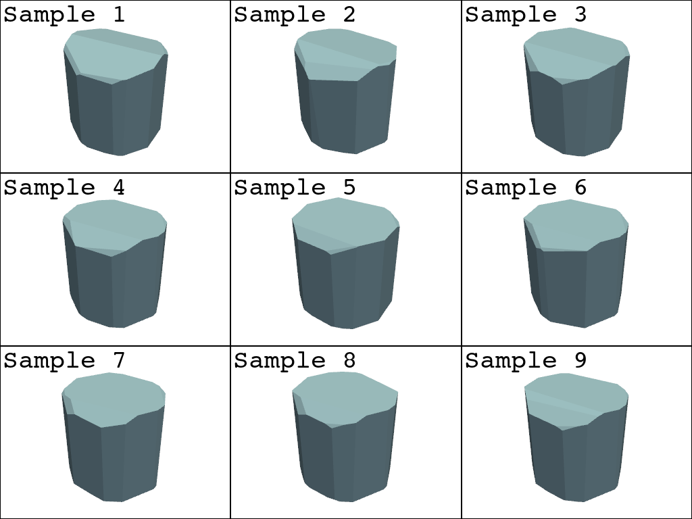
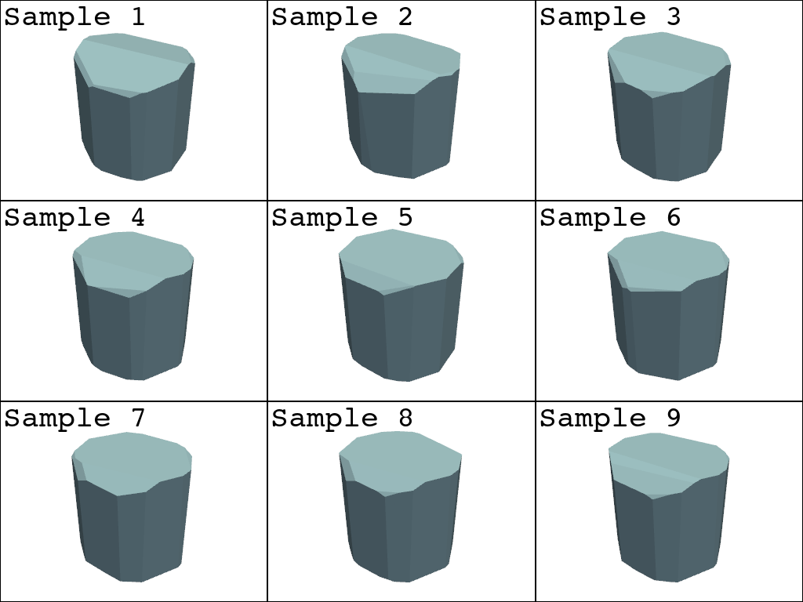

Note
Go to the end to download the full example code.
Shape Uncertainty#
Measuring the uncertainty in an inversion result
Setting up the observation conditions
import matplotlib.pyplot as plt
import numpy as np
import pyvista as pv
import mirage as mr
import mirage.vis as mrv
itensor = np.diag([1.0, 2.0, 3.0])
w0 = 9e-2 * mr.hat(np.array([[1.0, 1.0, 1.0]]))
idate = mr.utc(2023, 1, 1, 5)
obs_time = mr.hours(3)
obs_dt = mr.seconds(10)
pl_shape = (3, 3)
inversions = pl_shape[0] * pl_shape[1]
obj_file = 'cylinder.obj'
station = mr.Station(preset='pogs')
brdf = mr.Brdf(name='phong', cd=0.5, cs=0.5, n=10)
brdf_inversion = brdf
attitude = mr.RbtfAttitude(w0=w0, q0=np.array([[0.0, 0.0, 0.0, 1.0]]), itensor=itensor)
dates, epsecs = mr.date_arange(idate, idate + obs_time, obs_dt, return_epsecs=True)
q_of_t, w_of_t = attitude.propagate(epsecs)
dcms_of_t = mr.quat_to_dcm(q_of_t)
obj = mr.SpaceObject(obj_file, identifier='goes 15')
lc_ccd_signal_sampler, aux_data = station.observe_light_curve(
obj, attitude, brdf, dates, use_engine=False, model_scale_factor=1
)
sun_body = aux_data['sun_vector_object_body']
obs_body = aux_data['observer_vector_object_body']
sint = aux_data['sint']
lc_hat = aux_data['lc_clean_norm']
constr = aux_data['all_constraints_satisfied']
br_mean = aux_data['background_mean']
airy_disk_pixels = aux_data['airy_disk_pixels']
obs_to_moon = aux_data['obs_to_moon']
lc_clean = aux_data['lc_clean']
snr = aux_data['snr']
plt.figure(figsize=(7, 5))
lcs_noisy_adu = np.array([lc_ccd_signal_sampler() for _ in range(1000)])
lcs_noisy_irrad = lcs_noisy_adu / (
aux_data['sint'] * station.telescope.integration_time
)
lcs_noisy_unit_irrad = lcs_noisy_irrad * (aux_data['rmag_station_to_sat'] * 1e3) ** 2
lcs_noisy_mag = mr.irradiance_to_apparent_magnitude(lcs_noisy_irrad)
var_lcs = np.var(lcs_noisy_mag, axis=0)
mean_lcs = np.mean(lcs_noisy_mag, axis=0)
plt.plot(epsecs, mean_lcs, c='k')
for stdev in [1, 2, 3]:
plt.fill_between(
epsecs,
mean_lcs - (stdev - 1) * np.sqrt(var_lcs),
mean_lcs - stdev * np.sqrt(var_lcs),
alpha=0.4 - 0.1 * stdev,
color='b',
edgecolor=None,
)
plt.fill_between(
epsecs,
mean_lcs + (stdev - 1) * np.sqrt(var_lcs),
mean_lcs + stdev * np.sqrt(var_lcs),
alpha=0.4 - 0.1 * stdev,
color='b',
edgecolor=None,
)
mrv.texit(
'Light Curve with Uncertainty',
'Epoch seconds',
'Apparent Magnitude',
grid=False,
legend=['Mean', '1$\sigma$', '2$\sigma$', '3$\sigma$'],
)
plt.show()
pl = pv.Plotter(shape=pl_shape)
rec_objs = []
for _ in range(inversions):
lc_this = lc_ccd_signal_sampler()
egi_opt_initial, egi_opt = mr.optimize_egi(
lc_this / np.max(lc_this),
sun_body,
obs_body,
brdf_inversion,
merge_iter=2,
merge_angle=np.pi / 8,
return_all=True,
)
# Inversion
rec_objs.append(mr.construct_mesh_from_egi(egi_opt))
for i, rec_obj in enumerate(rec_objs):
pl.subplot(i // pl_shape[0], i % pl_shape[1])
mrv.render_spaceobject(pl, rec_obj)
pl.add_text(
f'Sample {i+1}',
font='courier',
)
pl.show()
 
WARNING: no observation constraints assigned!
Total running time of the script: (0 minutes 6.783 seconds)